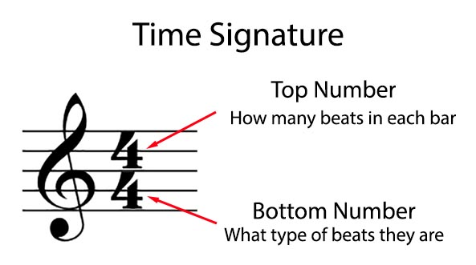
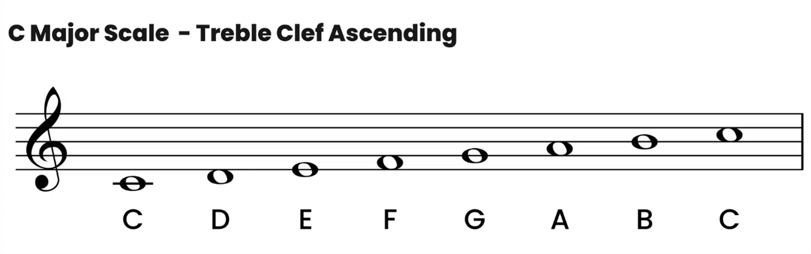
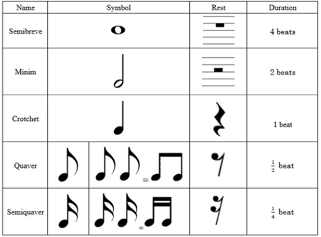

A time signature is an indication of how many beats are in each measure of music, as well as which note value is counted as a beat
A note is a name given to a specific audio vibration.Click on the notes to hear their sounds!!
In a song there are each note is held for different amount of time, so how would one tell the difference for how long a note is suppose to be held?? Well there notes with different beats are written in a different way!
